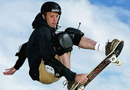

Skate Pro's
Tony Hawk
Anthony Frank Hawk (born May 12, 1968) is an American professional skateboarder. He is credited with the invention of many aerial skateboard tricks including the Stalefish, Madonna, and McHawk, and over 80 others, but is most famous for being the first recorded skater to land the 900, which consists of two-and-a-half rotations (900°) in the air before landing back on the pipe during the televised June 27, 1999 X Games, for which he received an enormous amount of attention.
He was also the second skateboarder to land a McTwist, a trick named after a Mike McGill of the Bones Brigade, a skate team of which Tony Hawk was an original member. It marked the next level of his rise to fame, solidifying his status as a household name. He retired from competitive skateboarding afterwards, but continues to skate and perform.
According to Newsweek magazine, Tony Hawk is the "most famous skateboarder, like, ever." A big claim, but with a lot to support it. In the 1980s and 1990s, Hawk almost single-handedly transformed skateboarding from a kids' parking-lot pastime into a respected sport. He won virtually every skateboarding competition he entered, and before he was twenty, he was considered to be the number one vertical skateboarder in the world.
Hawk was equally talented off the ramp. His business ventures and product endorsements have made him a very wealthy man, and have also kept him in the spotlight. As skateboarding icon Stacy Peralta told Sports Illustrated, "Tony is the first skateboarder who has given the world a face to put on the sport. He has become a part of American pop culture."
Source:Wikipedia
Source:Notable Biographies